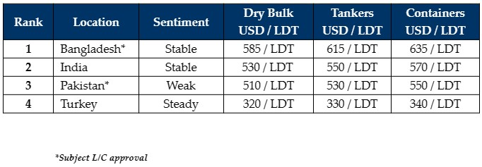

inWeekly Demolition Reports12/06/2023

Despite an overall neutral-to-positive budget in Bangladesh last week, the Central Bank has curiously decided to impose restrictionson L/Cs once again, reportedly due to the ongoing shortage of foreign currency / U.S. Dollar reserves in the country, as inflation / currency depreciations continue to hammer away at a majority of the global recycling destinations. Discussions are ongoing locally in order to address / resolve this situation. For the time being, however, there has been a pause on fresh sales into Bangladesh as without vessel financing / L/Cs in place, it is simply not possible to procure any tonnage.
Indian fundamentals have also improved, having seen some positive moves on the Indian Rupee over the last few weeks, in addition to steel gains that are providing End Buyers with further encouragement and confidence to improve some of their previously lowish levels on offers. This might eventually help those garish Cash Buyers who have been offering above market levels on some of the recent units.
For now, Pakistan remains the only sub-continent destination that is totally out of the picture, and this is due to the ongoing political unrest and economic calamity that has seen its currency lose much of its value over the last few years.
At the West end, Turkey passes through a reflection of last week, with opposing fundamentals and a Lira that’s essentially fallen off the wagon.
In the overall market today, the only thing lacking is a decent supply of tonnage to keep End Buyers busy and their yards occupied, as we head into the summer / holiday season and many ship owners and yard laborers head on holidays during the warmer / monsoon months.
Finally, after a busy first quarter of recycling, a minimal number of tankers have been proposed so far this year as containers seem to have all but vanished from the market, with over 25 container units sold for varying degrees of HKC recycling. Even dry bulk supply has started to dwindle (apart from a busy Far East / China market that is still shedding older units) and so until more tonnage is introduced, we can expect all of the markets to remain sluggish.
For week 23 of 2023, GMS demo rankings / pricing for the week are as below.

📄 Download PDF: Ship-recycling-market-insight-week-23-2023-Restricted.pdfSource: GMS,Inc. ,https://www.gmsinc.net/gms_new/index.php/web